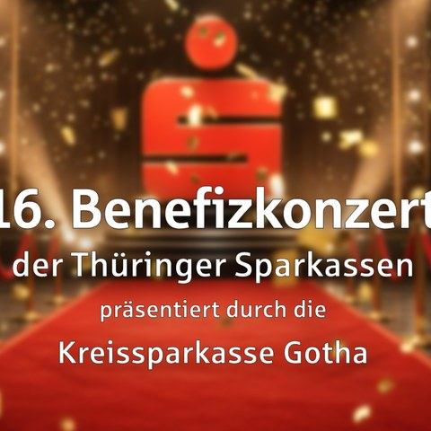

Benefizgala Friedenstein OpenAir 2026: Fünf Spendenclips und ein Interview mit Johannes Oerding

Beim Benefizkonzert der Sparkassen in Thüringen standen vor 3.500 Gästen auf Schloss Friedenstein in Gotha nicht nur Johannes Oerding und die Thüringen Philharmonie im Mittelpunkt, sondern auch die Menschen, die die Spenden bekommen. x@motion hat dafür die Videos zur Spendengala produziert und vor dem Konzert ein ausführliches Interview mit Johannes Oerding geführt. Ausgerichtet wurde die Gala von der Kreissparkasse Gotha und dem Sparkassen- und Giroverband Hessen-Thüringen.
Fünf Clips für fünf Spendenempfänger
Im Spendenblock erhielten fünf Organisationen aus der Region eine Spende. Statt sie nacheinander auf die Bühne zu bitten, haben wir jede mit einem eigenen Kurzfilm vorgestellt. Der Moderator kündigte die Clips an, danach liefen sie am Stück auf der Gala. Interviews und Drehs fanden vorab vor Ort bei den Vereinen statt.
- Kunst- und Kulturverein Mühlberg e.V.: Sanierung des Fußwegs zur Mühlburg
- KUKUNA Bad Tabarz: neue Künstlerbar und Sitzgelegenheiten
- Freibadfreunde Emsetal e.V.: Rettung und Wiedereröffnung des Freibads Winterstein
- Verein für Frauen und Kinder in Not e.V. Gotha: barrierefreie Schutzwohnung, bewusst ohne Aufnahmen aus dem Haus und ohne Betroffene
- Stadt Gotha: neues Fahrzeug für die Jugendarbeit
Die Clips sind 70 bis 90 Sekunden lang und folgen derselben Dramaturgie: Opener, Verein, Bedarf, Wirkung der Spende, emotionaler Moment, Dank. Jeder Clip hat einen eigenen Einstieg, vom Drohnenanflug bis zum Gang zum Schloss. So bleibt der Look einheitlich und die Abfolge trotzdem abwechslungsreich.
Als Beispiel: der Clip zu KUKUNA Bad Tabarz.
Interview mit Johannes Oerding
Am Nachmittag, nach dem Soundcheck, hatten wir Johannes Oerding vor der Kamera. Im Gespräch ging es um das Konzert und was es für ihn bedeutet, aber auch um seine aktuellen und künftigen Projekte. Besonders ehrlich wurde es bei der Frage, welche Verantwortung Menschen in der Öffentlichkeit haben und warum sie der Gesellschaft etwas zurückgeben sollten. Das passt zu einem Abend, an dem genau das im Mittelpunkt stand. Wir konnten das Interview in voller Länge verwenden. Es erschien im Nachgang auf unseren eigenen Kanälen.
Technische Umsetzung
Bei der Gala waren drei Kameraleute im Einsatz, dazu eine Drohne. Alle Clips wurden in 4K produziert. Geschnitten wurde in DaVinci Resolve Studio. Musik und Voice-Over sind KI-generiert, passgenau auf Stimmung und Dramaturgie der Clips abgestimmt und lizenzsicher für die Ausspielung auf allen Plattformen.
Ausspielung und Auswertung
Die Clips liefen auf den Kanälen der Kreissparkasse Gotha, ausgespielt über YouTube, Facebook, Instagram und LinkedIn, jeweils mit plattformspezifischen Texten, Captions und Tags. Auch der Sparkassen- und Giroverband Hessen-Thüringen hat die Clips ausgewertet. Die Beiträge wurden sehr gut aufgerufen, und die Menschen hinter den Spendenprojekten bekamen die Aufmerksamkeit, die sie verdienen.
Leistungsumfang
Konzeption und Dramaturgie · 5 Spendenclips (je in 4K) · Interviews und Locationdrehs vorab · 3 Kameraleute bei der Gala · Drohnenaufnahmen · Interview Johannes Oerding · Schnitt DaVinci Resolve · KI-Musik und KI-Voice-Over · Einspielung auf der Gala · Plattformtexte
Auftraggeber: Kreissparkasse Gotha in Zusammenarbeit mit dem Sparkassen- und Giroverband Hessen-Thüringen